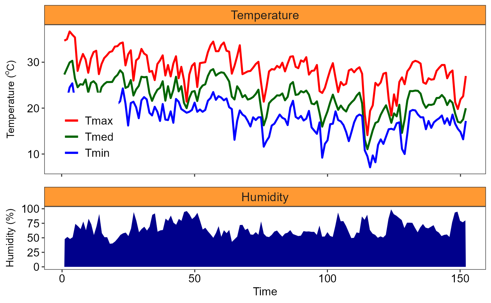

plot_TH1.RdThe plot_TH1 function allows the user to build a column/line graph with climatic parameters of temperature (maximum, minimum and average) and relative humidity (UR) or precipitation. This chart is widely used in scientific work in agrarian science
plot_TH1( tempo, Tmed, Tmax, Tmin, UR, xlab = "Time", yname1 = expression("Humidity (%)"), yname2 = expression("Temperature ("^o * "C)"), legend.T = "Temperature", legend.H = "Humidity", legend.tmed = "Tmed", legend.tmin = "Tmin", legend.tmax = "Tmax", colormax = "red", colormin = "blue", colormean = "darkgreen", fillarea = "darkblue", facet.fill = "#FF9933", panel.grid = FALSE, x = "days", breaks = "1 months", textsize = 12, legendsize = 12, titlesize = 12, linesize = 1, date_format = "%m-%Y", angle = 0, legend.position = c(0.1, 0.3) )
| tempo | Vector with times |
|---|---|
| Tmed | Vector with mean temperature |
| Tmax | Vector with maximum temperature |
| Tmin | Vector with minimum temperature |
| UR | Vector with relative humidity or precipitation |
| xlab | x axis name |
| yname1 | y axis name |
| yname2 | Secondary y-axis name |
| legend.T | faceted title legend 1 |
| legend.H | faceted title legend 2 |
| legend.tmed | Legend mean temperature |
| legend.tmin | Legend minimum temperature |
| legend.tmax | Legend maximum temperature |
| colormax | Maximum line color (default is "red") |
| colormin | Minimum line color (default is "blue") |
| colormean | Midline color (default is "darkgreen") |
| fillarea | area fill color (default is "darkblue") |
| facet.fill | faceted title fill color (default is #FF9933) |
| panel.grid | remove grid line (default is FALSE) |
| x | x scale type (days or data, default is "days") |
| breaks | Range for x scale when x = "date" (default is 1 months) |
| textsize | Axis text size |
| legendsize | Legend text size |
| titlesize | Axis title size |
| linesize | Line size |
| date_format | Date format for x="data" |
| angle | x-axis scale text rotation |
| legend.position | Legend position |
Returns row and column graphs for graphical representation of air temperature and relative humidity. Graph normally used in scientific articles
Gabriel Danilo Shimizu, shimizu@uel.br
Leandro Simoes Azeredo Goncalves
Rodrigo Yudi Palhaci Marubayashi
#> #> #>#> #> #>#> #> #>#> #> #>plot_TH1(tempo, Tmed, Tmax, Tmin, UR)